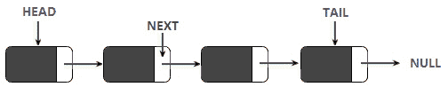
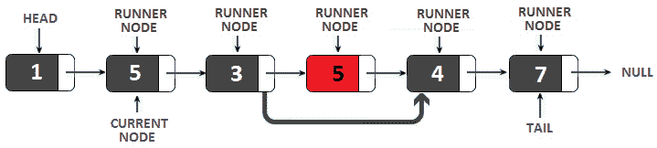
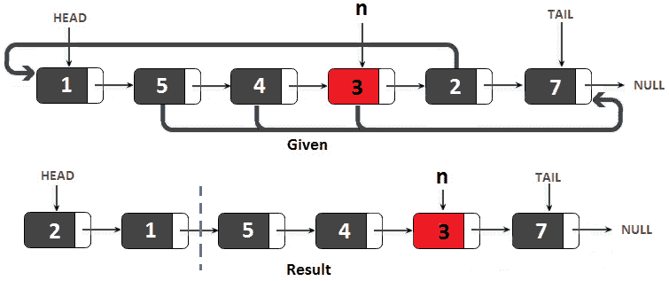
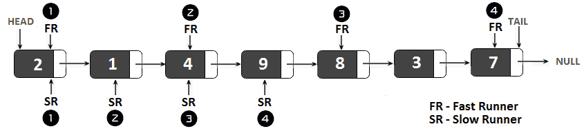
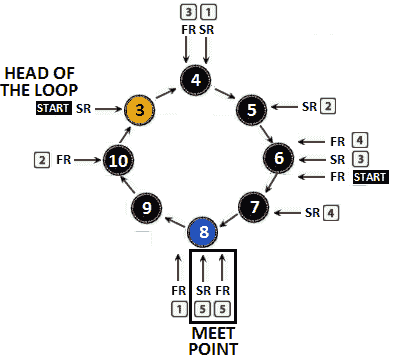
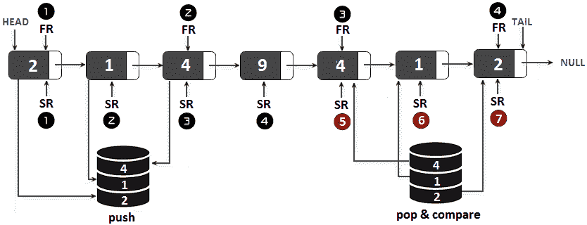
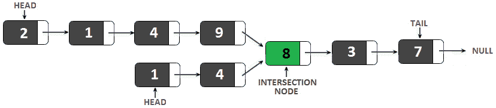
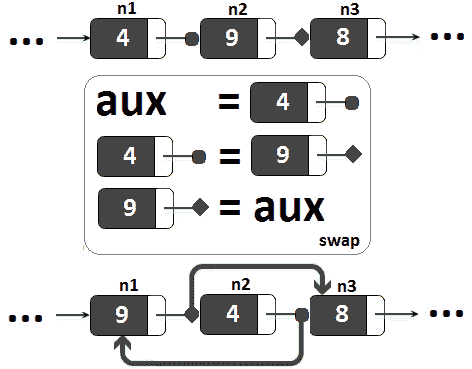
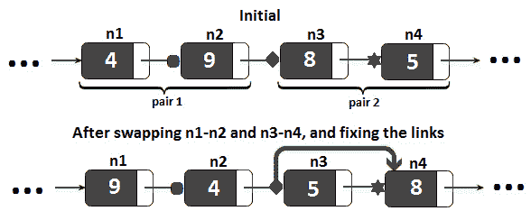
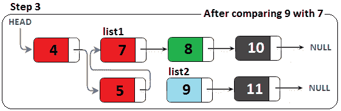

本章介绍了最常见的编码挑战，包括您将在编码采访中遇到的地图和链表。由于在技术访谈中首选单链表，本章中的大多数问题都将利用它们。但是，您可以挑战自己，并尝试在双链接列表的上下文中解决每个此类问题。通常，对于双链接列表，问题变得更容易解决，因为双链接列表为每个节点维护两个指针，并允许我们在列表中来回导航。
到本章结束时，您将了解所有涉及链表和地图的常见问题，并且您将对许多技术有足够的知识和理解，以帮助您解决这一类别中的任何其他问题。我们的议程很简单；我们将介绍以下主题：
本章中的所有代码文件都可以在 GitHub 上找到，可以在上访问 https://github.com/PacktPublishing/The-Complete-Coding-Interview-Guide-in-Java/tree/master/Chapter11 。
然而，在讨论编码挑战之前，让我们首先了解链表和地图。
链表是一种表示一系列节点的线性数据结构。第一个节点通常称为头，而最后一个节点通常称为尾。当每个节点指向下一个节点时，我们有一个单链表，如下图所示：

图 11.1–单链表
当每个节点指向下一个节点和前一个节点时，我们有一个双链表，如下图所示：
图 11.2–双链接列表
让我们考虑一个单链表。如果尾部指向头部，则我们有一个循环单链表。另外，让我们考虑一个双链表。如果尾部指向头部，头部指向尾部，那么我们有一个循环双链表。
在单链表中，节点保存数据（例如，整数或对象）和指向下一个节点的指针。以下代码表示单链表的节点：
private final class Node {
private int data;
private Node next;
}
双链接列表还需要指向上一个节点的指针：
private final class Node {
private int data;
private Node next;
private Node prev;
}
与数组不同，链表不提供访问第n个元素的固定时间。我们必须迭代n-1 个元素，才能得到n个元素。我们可以从链表的开始（单次和双次）以固定时间插入、删除和更新节点。如果我们的实现管理双链表（称为双头双链表）的尾部，那么我们也可以从链表的末尾以固定时间插入、移除和更新节点；否则，我们需要迭代链表直到最后一个节点。如果我们的实现管理单链表的尾部（称为双头单链表），那么我们可以在链表的末尾以固定时间插入节点；否则，我们需要迭代链表直到最后一个节点。
本书的代码包附带以下应用程序（每个应用程序公开了insertFirst（）、insertLast（）、insertAt（）、delete（）、deleteByIndex（）和print（）方法）：
强烈建议您自己对这些应用程序进行骨骼解剖。每个步骤都有大量的注释，以帮助您理解每个步骤。以下编码挑战依赖于这些链表实现。
想象一下，你正在字典里寻找一个单词。这个词本身是独一无二的，可以被认为是一个键。这个词的意义可以被视为值。因此，该词及其含义构成键值对。类似地，在计算中，键值对容纳一段数据，通过使用键进行搜索可以在其中找到值。换句话说，我们知道关键，我们可以用它来找到价值。
映射是一种抽象数据类型（ADT），它通过数组管理键值对（称为条目）。地图的特征包括：
现在我们已经简要地概述了链表和地图的概念，让我们开始我们的编码挑战。
在下面的 17 个编码挑战中，我们将讨论一些涉及地图和链表的问题。由于链表在技术面试中更受欢迎，我们将为他们分配更多的问题。但是，为了掌握地图数据结构的概念，特别是内置 Java 地图实现，我强烈建议您购买 Packt Publishing（出版的书Java 编码问题https://www.packtpub.com/programming/java-coding-problems ）。除了是本书的绝妙伴侣外，Java 编码问题还包含以下地图问题（请注意，这不是一个完整的列表）：
现在我们有了关于链接列表和地图的基本概念，让我们来看看访谈中最流行的与地图和链表有关的问题。
问题：编写地图数据结构的基本实现，允许您放置、获取和移除值。您应该有一个名为put（kk，vv）的方法，一个名为get（kk）的方法，还有一个名为remove（kk）的方法。
解决方案：如您所知，映射是一个键值对数据结构。每个键值对都是映射的一个条目。因此，在实现条目之前，我们无法实现映射的功能。因为一个条目包含两条信息，所以我们需要定义一个类，该类以通用方法包装键和值。
代码非常简单：
private final class MyEntry<K, V> {
private final K key;
private V value;
public MyEntry(K key, V value) {
this.key = key;
this.value = value;
}
// getters and setters omitted for brevity
}
现在我们有了一个条目，可以声明一个映射了。映射通过具有默认大小的条目数组进行管理，该数组称为映射容量。初始容量为 16 个元素的映射声明如下：
private static final int DEFAULT_CAPACITY = 16; private MyEntry<K, V>[] entries = new MyEntry[DEFAULT_CAPACITY];
接下来，我们可以将重点放在使用此数组作为客户端的映射上。只有当条目的键在地图上是唯一的时，才能将条目放入地图。如果给定的键存在，那么我们只更新它的值。除此之外，只要没有超过地图容量，我们就可以添加一个条目。在这种情况下，典型的方法是将地图的大小增加一倍。基于这些语句的代码如下所示：
private int size;
public void put(K key, V value) {
boolean success = true;
for (int i = 0; i < size; i++) {
if (entries[i].getKey().equals(key)) {
entries[i].setValue(value);
success = false;
}
}
if (success) {
checkCapacity();
entries[size++] = new MyEntry<>(key, value);
}
}
以下帮助器方法用于将贴图的容量增加一倍。由于 Java 数组无法调整大小，我们需要通过创建初始数组的副本来解决此问题，但其大小是初始数组的两倍：
private void checkCapacity() {
if (size == entries.length) {
int newSize = entries.length * 2;
entries = Arrays.copyOf(entries, newSize);
}
}
使用键获取值。如果找不到给定的密钥，则返回null。获取值不会从映射中删除条目。让我们看一下代码：
public V get(K key) {
for (int i = 0; i < size; i++) {
if (entries[i] != null) {
if (entries[i].getKey().equals(key)) {
return entries[i].getValue();
}
}
}
return null;
}
最后，我们需要使用密钥删除一个条目。从数组中删除一个元素需要将其余元素移动一个位置。元素移位后，倒数第二个元素和最后一个元素相等。通过将数组的最后一个元素置零，可以避免内存泄漏。忘记这一步是一个常见的错误：
public void remove(K key) {
for (int i = 0; i < size; i++) {
if (entries[i].getKey().equals(key)) {
entries[i] = null;
size--;
condenseArray(i);
}
}
}
private void condenseArray(int start) {
int i;
for (i = start; i < size; i++) {
entries[i] = entries[i + 1];
}
entries[i] = null; // don't forget this line
}
映射的生产实现比这里公开的要复杂得多（例如，映射使用 bucket）。然而，最有可能的是，在面试中，你不需要知道比这个实现更多的。然而，向面试官提及这一点是个好主意。通过这种方式，你可以向他们展示你理解问题的复杂性，并且你意识到了这一点。
完成！完整的应用程序名为地图。
问题 T1：考虑以前的编码挑战作为地图数据结构的一种基本实现。使用返回一组键（keySet（））的方法和返回一组值（values（）的方法来丰富此实现。
解决方案：返回一组密钥是一个简单的操作，包括循环地图的密钥并将它们逐个添加到集。以下代码不言自明：
public Set<K> keySet() {
Set<K> set = new HashSet<>();
for (int i = 0; i < size; i++) {
set.add(entries[i].getKey());
}
return set;
}
为了返回一组值，我们循环映射并将这些值逐个添加到列表中。我们使用列表，因为值可以包含重复项：
public Collection<V> values() {
List<V> list = new ArrayList<>();
for (int i = 0; i < size; i++) {
list.add(entries[i].getValue());
}
return list;
}
完成！这很简单；为生产实现的映射远比这里显示的复杂。例如，值被缓存，而不是每次提取。向面试官提及这一点，让他/她看到你知道生产图是如何工作的。慢慢来，查看 Java 内置的映射和哈希映射源代码。
完整的应用程序名为地图。
谷歌、Adobe
问题 T1：给定的 T2，N，T3，螺母和 T4。编写一段代码，以最小迭代次数查找螺母和螺栓之间的所有匹配项。
解决办法：让我们考虑一下螺母和螺栓是由下面两个数组表示的：
char[] nuts = {'$', '%', '&', 'x', '@'};
char[] bolts = {'%', '@', 'x', '$', '&'};
最直观的解决方案依赖于蛮力方法。我们可以选择一个螺母，然后迭代螺栓以找到它的配合。例如，如果我们选择螺母【0】，我们可以找到它与螺栓【3】的配合。另外，我们可以取螺母【1】与螺栓【0】匹配。该算法非常简单，可以通过两个语句的来实现，复杂度时间为 O（n2）。
另外，我们可以考虑对螺母和螺栓进行分类。这样，螺母和螺栓之间的匹配将自动对齐。这也会起作用，但不包括最小迭代次数。
为了获得最少的迭代次数，我们可以使用哈希映射。在这个哈希映射中，首先，我们将每个 nut 作为一个键，并将其在给定 nut 数组中的位置作为一个值。接下来，我们迭代螺栓，并检查哈希映射是否包含每个螺栓作为键。如果哈希映射包含当前螺栓的密钥，则我们找到了匹配项（一对）；否则，就没有与此螺栓匹配的螺栓。让我们看一下代码：
public static void match(char[] nuts, char[] bolts) {
// in this map, each nut is a key and
// its position is as value
Map<Character, Integer> map = new HashMap<>();
for (int i = 0; i < nuts.length; i++) {
map.put(nuts[i], i);
}
//for each bolt, search a nut
for (int i = 0; i < bolts.length; i++) {
char bolt = bolts[i];
if (map.containsKey(bolt)) {
nuts[i] = bolts[i];
} else {
System.out.println("Bolt " + bolt + " has no nut");
}
}
System.out.println("Matches between nuts and bolts: ");
System.out.println("Nuts: " + Arrays.toString(nuts));
System.out.println("Bolts: " +Arrays.toString(bolts));
}
此代码的运行时为 O（n）。完整的代码名为NutsAndBolts。
亚马逊、谷歌、Adobe、微软
问题 T1：考虑一个未经排序的整数单链表。编写一段删除重复项的代码。
解决方案：一个简单的解决方案包括迭代给定链表，并将每个节点的数据存储在集合<整数>中。但是，在将当前节点的数据添加到集合之前，我们将根据集合的当前内容检查数据。如果集合已经包含该数据，我们将从链表中删除该节点；否则，我们只需将其数据添加到集合。通过将上一个节点链接到当前节点的下一个节点，可以从单链接列表中删除节点。
下图说明了这一说法：

图 11.3–从单链表中删除节点
由于单链表只包含指向下一个节点的指针，因此我们无法知道当前节点之前的节点。技巧是跟踪两个连续的节点，从当前节点作为链表头开始，前一个节点作为null。当当前节点前进到下一个节点时，上一个节点前进到当前节点。让我们看看将这些语句粘在一起的代码：
// 'size' is the linked list size
public void removeDuplicates() {
Set<Integer> dataSet = new HashSet<>();
Node currentNode = head;
Node prevNode = null;
while (currentNode != null) {
if (dataSet.contains(currentNode.data)) {
prevNode.next = currentNode.next;
if (currentNode == tail) {
tail = prevNode;
}
size--;
} else {
dataSet.add(currentNode.data);
prevNode = currentNode;
}
currentNode = currentNode.next;
}
}
此解决方案适用于 O（n）的时间和空间复杂度，其中n是链表中的节点数。我们可以尝试另一种方法，将空间复杂性降低到 O（1）。首先，我们考虑下面的图表作为下一步的指导：

图 11.4–从单链表中删除节点
此外，runner 节点遍历链表并检查每个节点的数据是否等于当前节点的数据。当运行程序代码遍历链表时，当前节点的位置保持不变。
如果 runner 节点检测到重复，则会将其从链接列表中删除。当 runner 节点到达链接列表的尾部时，当前节点前进到下一个节点，runner 节点从当前节点开始再次遍历链接列表。这是一个 O（n2）时间复杂度算法，但空间复杂度为 O（1）。让我们看一下代码：
public void removeDuplicates() {
Node currentNode = head;
while (currentNode != null) {
Node runnerNode = currentNode;
while (runnerNode.next != null) {
if (runnerNode.next.data == currentNode.data) {
if (runnerNode.next == tail) {
tail = runnerNode;
}
runnerNode.next = runnerNode.next.next;
size--;
} else {
runnerNode = runnerNode.next;
}
}
currentNode = currentNode.next;
}
}
完整代码为名为LinkedListRemoveDuplicates。
Adobe、Flipkart、亚马逊
问题 T1A:考虑一个未排序的 Ty2 T1 整数和一个给定的整数的单链表。编写一段代码，重新排列n周围的节点。换句话说，到最后，链表将包含小于n的所有值，后面是大于n的所有节点。节点的顺序可以改变，n本身可以在大于n的值之间的任意位置。
考虑到给定的链表为 1→ 5.→ 4.→ 3.→ 2.→ 7.→ 空，且n=3。因此，3 是我们的轴心。其余节点应围绕该轴重新排列，以符合问题要求。这个问题的一个解决方案是逐节点迭代链表，每个比枢轴小的节点放在头部，而每个比枢轴大的节点放在尾部。下图帮助我们可视化此解决方案：

图 11.5–链表重新排列
因此，值为 5、4 和 3 的节点移动到尾部，而值为 2 的节点移动到头部。最后，所有小于 3 的值都在虚线的左侧，而所有大于 3 的值都在虚线的右侧。我们可以将这个算法编码如下：
public void rearrange(int n) {
Node currentNode = head;
head = currentNode;
tail = currentNode;
while (currentNode != null) {
Node nextNode = currentNode.next;
if (currentNode.data < n) {
// insert node at the head
currentNode.next = head;
head = currentNode;
} else {
// insert node at the tail
tail.next = currentNode;
tail = currentNode;
}
currentNode = nextNode;
}
tail.next = null;
}
完整的应用程序名为名为LinkedListRearranging。
Adobe、Flipkart、亚马逊、谷歌、微软
问题 T1：考虑一个整数 T1 和一个给定的整数的单链表。编写一段代码，将第n个节点的值返回到最后一个节点。
解决方案：我们有一群节点，我们必须找到满足给定约束的nth 节点。根据我们在第 8 章递归和动态规划中的经验，我们可以直觉出这个问题有一个涉及递归的解决方案。但是我们也可以通过迭代的方法来解决。由于迭代解决方案更有趣，我将在这里介绍它，而递归解决方案在捆绑代码中可用。
让我们使用下图来展示算法（按照从上到下的图表）：

图 11.6–第 n 个到最后一个节点
我们得到了一个链表，2→ 1.→ 5.→ 9→ 8.→ 3.→ 7.→ null，我们希望找到第五个到最后一个节点的值，即 5（您可以在前面的图表顶部看到）。迭代解使用两个指针；让我们将它们表示为runner1和runner2。最初，它们都指向链接列表的头部。在步骤 1（上图中间），我们将runner1从头部移动到第五个到头部（或n第五个到头部）节点。对于从 0 到 5 的循环（或n，这很容易在中实现。在步骤 2 中（上图底部），我们同时移动runner1和runner2，直到runner1为空。当runner1为空时，runner2将指向从头部到最后一个节点的第五个节点（或从头部到最后一个节点的nth）。在代码行中，我们按如下方式执行：
public int nthToLastIterative(int n) {
// both runners are set to the start
Node firstRunner = head;
Node secondRunner = head;
// runner1 goes in the nth position
for (int i = 0; i < n; i++) {
if (firstRunner == null) {
throw new IllegalArgumentException(
"The given n index is out of bounds");
}
firstRunner = firstRunner.next;
}
// runner2 run as long as runner1 is not null
// basically, when runner1 cannot run further (is null),
// runner2 will be placed on the nth to last node
while (firstRunner != null) {
firstRunner = firstRunner.next;
secondRunner = secondRunner.next;
}
return secondRunner.data;
}
完整的应用程序是名为LinkedListToLastNode。
Adobe、Flipkart、亚马逊、谷歌、微软
问题 T1：考虑一个包含循环的整数 T3 的单链表。换句话说，链表的尾部指向定义循环或循环的先前节点之一。编写一段代码，检测循环的第一个节点（即循环开始的节点）。
解决方案：如果我们管理链表的尾部节点，那么很明显搜索到的节点（循环开始）位于尾部。下一个。如果我们不管理尾部，那么我们可以搜索有两个节点指向它的节点。这也很容易实现。如果我们知道链接的列表的大小，那么我们可以从 0 迭代到大小，最后一个节点。下一个指向标记循环开始的节点。
然而，让我们尝试另一种需要更多想象力的算法。这种方法称为快跑/慢跑方法。它很重要，因为它可以用于涉及链表的某些问题。
快速运行/慢速运行方法主要涉及使用两个指针，它们从链表的开头开始，同时遍历链表，直到满足某个条件为止。一个指针被命名为慢速运行器（SR，因为它逐节点遍历列表。另一个指针名为Fast Runner（FR，因为它通过每次移动跳过下一个节点来迭代列表。下图是四个动作的示例：

图 11.7–快跑者/慢跑者示例
所以，在第一步，FR和SR指向头部。第二步，SR指向值为 1 的head.next节点，FR指向值为 4 的head.next.next节点。这些举措继续遵循这一模式。当FR到达链表尾部时，SR指向中间节点。
正如您将在下一个编码挑战中看到的，快速运行/慢速运行方法可用于检测链接列表是否为回文。然而，现在，让我们继续我们的问题。那么，我们可以使用这种方法来检测链表是否有循环，并找到这个循环的开始节点吗？这个问题产生了另一个问题。如果我们将快速运行/慢速运行方法应用于具有循环的链表，FR和SR指针是否冲突或相遇？答案是肯定的，它们会相互碰撞。
为了解释这一点，我们假设在开始循环之前，我们有q前面的节点（这些节点是在循环之外）。对于SR遍历的每q个节点，FR已经遍历了 2*q个节点（这一点很明显，因为FR每次移动都会跳过一个节点）。因此，当SR进入循环（到达循环开始节点）时，FR已经穿越了 2 个*q节点。换言之，FR位于环路部分的 2*q-q节点；因此，它位于环路部分的q节点。让我们通过以下测试用例将其可视化：

图 11.8–带循环的链表
因此，当SR进入循环（到达第四个节点）时，FR进入循环的第四个节点。当然，我们需要考虑的是，前面的非循环节点的数量可能大于环路长度；因此，我们应该将 2*q-q表示为q=modulo（q，LOOP_SIZE）。
例如，考虑 Endot0q q＝模 OrdT1（3, 8）＝3，其中，我们有三个非循环节点（Po.T2，q，Qo.T3，Type＝3），并且环的大小是八（Po.T4；在这种情况下，我们也可以应用 2*q-q，因为 2*3-3=3。因此，我们可以得出结论，SR位于距离列表开始的三个节点处，FR位于距离循环开始的三个节点处。但是，如果链表在 7 个节点的循环之前有 25 个节点，那么Q=modulo（25，7）=4 个节点，而 2*25-25=25，这是错误的。
除此之外，FR和SR正在环路内移动。由于它们在一个圆圈中移动，这意味着当FR离开SR时也会靠近SR，反之亦然。下图隔离了循环，并显示了循环如何继续移动FR和SR直到它们碰撞：

图 11.9–FR 和 SR 碰撞
慢慢追踪SR和FR直到它们到达交汇点。我们知道FR在FR后面的环路大小–Q节点，SR在FR后面的Q节点。在我们的测试用例中，FR是SR后面的 8-3=5 个节点，SR是FR后面的 3 个节点。通过继续移动SR和FR，我们可以看到FR以每移动一步的速度追赶。
那么，他们在哪里见面？那么，如果FR以每次移动 1 步的速度追赶，并且FR是循环的大小–在SR后面的 Q节点，那么它们将在循环头之前满足Q步。在我们的测试用例中，它们将在值为 8 的节点处的循环头之前满足 3 个步骤。
如果汇合点位于循环头的Q节点处，我们可以通过回顾汇合点也位于循环头的Q节点处继续，因为Q=模（Q，循环大小）。这意味着我们可以开发以下四步算法：
让我们将其转化为代码：
public void findLoopStartNode() {
Node slowRunner = head;
Node fastRunner = head;
// fastRunner meets slowRunner
while (fastRunner != null && fastRunner.next != null) {
slowRunner = slowRunner.next;
fastRunner = fastRunner.next.next;
if (slowRunner == fastRunner) { // they met
System.out.println("\nThe meet point is at
the node with value: " + slowRunner);
break;
}
}
// if no meeting point was found then there is no loop
if (fastRunner == null || fastRunner.next == null) {
return;
}
// the slowRunner moves to the head of the linked list
// the fastRunner remains at the meeting point
// they move simultaneously node-by-node and
// they should meet at the loop start
slowRunner = head;
while (slowRunner != fastRunner) {
slowRunner = slowRunner.next;
fastRunner = fastRunner.next;
}
// both pointers points to the start of the loop
System.out.println("\nLoop start detected at
the node with value: " + fastRunner);
}
请注意，不要期望FR可以跳过SR，因此他们不会相遇。这种情况是不可能的。假设FR已经跳过SR并且它在节点a处，那么SR一定在节点a1 处。这意味着，在上一步骤中，FR位于节点a-2，SR位于节点a-1）-1=a-2；因此，它们发生了碰撞。
完整的应用程序名为LinkedListLoopDetection。在这段代码中，您将找到一个名为generateLoop（）的方法。调用此方法可生成带有循环的随机链表。
Adobe、Flipkart、亚马逊、谷歌、微软
问题 T1：考虑一个整数的单链表。写一段代码，如果链表是回文，则返回true。解决方案应该包括快速运行/慢速运行方法（该方法在前面的编码挑战中有详细说明）。
解决方案：回文（无论是字符串、数字还是链表）在反转时看起来都没有变化，这只是一个快速提醒。这意味着可以从两个方向处理（读取）回文，并将获得相同的结果（例如，数字 12321 是回文，而数字 12322 不是）。
我们可以考虑一个解决方案，它涉及快速流道/慢速流道方法，认为当 T0 T0 FR SUTT1 到达链表的末尾时，ORT T2 SR AUTYT3T 位于链表的中间。
如果链接列表的前半部分与后半部分相反，则链接列表是回文。因此，如果在堆栈中存储SR遍历的所有节点，直到FR到达链表的末尾，则生成的堆栈将按相反顺序包含链表的前半部分。让我们通过下图将其可视化：

图 11.10–使用快速运行/慢速运行方法的链表回文
因此，当FR到达链表的端并且SR到达第四个节点（链表的中间）时，堆栈包含值 2、1 和 4。接下来，我们可以继续以 1 个节点的速率移动SR，直到链表结束。在每次移动时，我们从堆栈中弹出一个值，并将其与当前节点值进行比较。如果我们发现不匹配，那么链表就不是回文。在代码中，我们有以下内容：
public boolean isPalindrome() {
Node fastRunner = head;
Node slowRunner = head;
Stack<Integer> firstHalf = new Stack<>();
// the first half of the linked list is added into the stack
while (fastRunner != null && fastRunner.next != null) {
firstHalf.push(slowRunner.data);
slowRunner = slowRunner.next;
fastRunner = fastRunner.next.next;
}
// for odd number of elements we to skip the middle node
if (fastRunner != null) {
slowRunner = slowRunner.next;
}
// pop from the stack and compare with the node by node of
// the second half of the linked list
while (slowRunner != null) {
int top = firstHalf.pop();
// a mismatch means that the list is not a palindrome
if (top != slowRunner.data) {
return false;
}
slowRunner = slowRunner.next;
}
return true;
}
Adobe、Flipkart、微软
问题 T1：考虑两个积极的 T2 整数和两个单链表。第一个整数逐位存储在第一个链表中（第一个数字是第一个链表的头）。第二个整数逐位存储在第二个链表中（第一个数字是第二个链表的头）。编写一段代码，将两个数字相加，并以链表的形式返回总和，每个节点有一个数字。
解决方案：让我们从测试用例的可视化开始：

图 11.11–将两个数字相加为链表
如果我们根据前面的图表一步一步地计算总和，我们得到以下结果：
我们加上 7+7=14，所以我们写下 4 并携带 1：
得到的链表是 4→ ?
我们加上 3+9+1=13，所以我们写下 3 并携带 1：
得到的链表是 4→ 3.→ ?
我们加上 8+8+1=17，所以我们写下 7 并携带 1：
得到的链表是 4→ 3.→ 7.→ ?
我们加 9+4+1=14，所以我们写下 4 并携带 1
得到的链表是 4→ 3.→ 7.→ 4.→ ?
我们加上 4+1=5，所以我们写下 5，什么也不带：
得到的链表是 4→ 3.→ 7.→ 4.→ 5.→ ?
我们加 1+0=1，所以我们写下 1，不携带任何内容：
得到的链表是 4→ 3.→ 7.→ 4.→ 5.→ 1.→ ?
我们加上 2+0=2，所以我们写下 2，什么也不带：
得到的链表是 4→ 3.→ 7.→ 4.→ 5.→ 1.→ 2.
如果我们将结果链表写为一个数字，则得到 4374512；因此，我们需要将其逆转为 2154734。虽然在捆绑代码中可以找到反转结果链表的方法（其本身可以被视为编码挑战），但以下方法在递归方法中应用了前面的步骤（如果您不熟悉递归问题，请不要忘记介绍第 8 章，递归和动态规划。本质上，以下递归通过逐节点添加数据来工作，将多余的数据传递到下一个节点：
private Node sum(Node node1, Node node2, int carry) {
if (node1 == null && node2 == null && carry == 0) {
return null;
}
Node resultNode = new Node();
int value = carry;
if (node1 != null) {
value += node1.data;
}
if (node2 != null) {
value += node2.data;
}
resultNode.data = value % 10;
if (node1 != null || node2 != null) {
Node more = sum(node1 == null
? null : node1.next, node2 == null
? null : node2.next, value >= 10 ? 1 : 0);
resultNode.next = more;
}
return resultNode;
}
完整的应用程序名为LinkedListSum。
Adobe、Flipkart、谷歌、微软
问题 T1：考虑两个 T2 单链表。编写一段代码，检查两个列表是否相交。交叉点基于参考，而不是值，但是您应该返回交叉点节点的值。因此，通过引用检查交点并返回值。
解决方案：如果您不确定两个链表的交集是什么意思，那么我们建议您绘制一个测试用例，并与面试官讨论细节。下图显示了这种情况：

图 11.12–两个列表的交叉点
在这个图中，我们有两个列表，它们在值为 8 的节点处相交。因为我们讨论的是引用交集，这意味着值为 9 和值为 4 的节点指向值为 8 的节点的内存地址。
主要问题是这些列表的大小不一样。如果它们的大小相等，我们可以从头到尾逐点遍历它们，直到它们发生碰撞（直到节点列表 1。下一步=节点列表 2。下一步。如果我们可以跳过值为 2 和 1 的节点，我们的列表大小将相同（请参阅下图；由于第一个列表比第二个列表长，我们应该从标记为虚拟头的节点开始迭代）：

图 11.13–删除顶部列表的前两个节点
记住这句话，我们可以推断出以下算法：
public int intersection() {
// this is the head of first list
Node currentNode1 = {head_of_first_list};
// this is the head of the second list
Node currentNode2 = {head_of_second_list};
// compute the size of both linked lists
// linkedListSize() is just a helper method
int s1 = linkedListSize(currentNode1);
int s2 = linkedListSize(currentNode2);
// the first linked list is longer than the second one
if (s1 > s2) {
for (int i = 0; i < (s1 - s2); i++) {
currentNode1 = currentNode1.next;
}
} else {
// the second linked list is longer than the first one
for (int i = 0; i < (s2 - s1); i++) {
currentNode2 = currentNode2.next;
}
}
// iterate both lists until the end or the intersection node
while (currentNode1 != null && currentNode2 != null) {
// we compare references not values!
if (currentNode1 == currentNode2) {
return currentNode1.data;
}
currentNode1 = currentNode1.next;
currentNode2 = currentNode2.next;
}
return -1;
}
完整的应用程序名为LinkedListInstituteSection。在代码中，您将看到一个名为GenerateToLinkedListWithInterection（）的助手方法。用于生成具有交点的随机列表。
亚马逊、谷歌
问题 T1：考虑一个单独的 T2 链表。编写一段代码，交换相邻节点，以便创建一个列表，如 1→ 2.→ 3.→ 4.→ null 变为 2→ 1.→ 4.→ 3.→ 无效的考虑交换相邻节点，而不是它们的值！
解决方案：我们可以减少寻找交换两个连续节点n1和n2的解决方案的问题。交换两个值（例如，两个整数，v1和v2）的一种众所周知的技术依赖于一个辅助变量，可以按如下方式写入：
aux=v1；v1=v2；v2=辅助；
但是，我们不能将这种简单的方法应用于节点，因为我们必须处理它们的链接。仅写以下内容是不够的：
aux=n1；n1=n2；n2=辅助；
如果我们依靠这个简单的方法来交换n1和n2，那么我们将得到类似于下图的东西（注意，在交换n1和n2之后，我们有n1。下一个=n3和n2。下一个=n1，这是完全错误的）：

图 11.14–断开链接的普通交换（1）
但是我们可以修复链接，对吗？那么我们可以显式设置n1.next指向n2，设置n2.next指向n3：
n1.next=n2
n2.next=n3
现在应该好了！我们可以交换两个连续的节点。然而，当我们交换一对节点时，我们也中断了两个连续的节点对之间的链接。下图说明了此问题（我们交换并修复了n1-n2对和n3-n4对的链接）：

图 11.15–断开链接的普通交换（2）
注意在交换这两对之后，n2.next指向n4，这是错误的。因此，我们也必须修复这个链接。为此，我们可以存储n2，在交换n3-n4后，我们可以通过设置n2 来修复链接。下一步=n3。现在，一切看起来都很好，我们可以将其转化为代码：
public void swap() {
if (head == null || head.next == null) {
return;
}
Node currentNode = head;
Node prevPair = null;
// consider two nodes at a time and swap their links
while (currentNode != null && currentNode.next != null) {
Node node1 = currentNode; // first node
Node node2 = currentNode.next; // second node
Node node3 = currentNode.next.next; // third node
// swap node1 node2
Node auxNode = node1;
node1 = node2;
node2 = auxNode;
// repair the links broken by swapping
node1.next = node2;
node2.next = node3;
// if we are at the first swap we set the head
if (prevPair == null) {
head = node1;
} else {
// we link the previous pair to this pair
prevPair.next = node1;
}
// there are no more nodes, therefore set the tail
if (currentNode.next == null) {
tail = currentNode;
}
// prepare the prevNode of the current pair
prevPair = node2;
// advance to the next pair
currentNode = node3;
}
}
完整的应用程序名为LinkedListPairwiseSwap。考虑挑战你自己的 To.t3。
亚马逊、谷歌、Adobe、微软、Flipkart
问题 T1：考虑两个排序的 To2 T2 单链表。写一段代码，合并这两个列表，不需要额外的空间。
解决方案：我们有两个排序列表，列表 1：4→ 7.→ 8.→ 10→ 空和列表 2：5→ 9→ 11→ null，我们想要得到结果，4→ 5.→ 7.→ 8.→ 9→ 10→ 11→ 无效的此外，我们希望在不分配新节点的情况下获得此结果。
由于无法分配新节点，因此必须选择其中一个列表作为最终结果或合并的链表。也就是说，我们可以从列表 1开始作为合并链表，在列表 1的适当位置添加列表 2中的节点。在处理每个比较之后，我们将指针（列表 1移动到合并列表中的最后一个节点。
例如，我们首先比较这两个列表的标题。如果列表 1的头小于列表 2的头，我们选择列表 1的头作为合并列表的头。否则，如果列表 1的头大于列表 2的头，我们交换头。下图说明了此步骤：

图 11.16–合并两个排序的链表（步骤 1）
由于列表 1的头小于列表 2（4<5）的头，因此成为合并列表的头。我们说过列表 1将指向合并列表的最后一个节点；因此，比较的下一个节点应该是列表 1.next（值为 7 的节点）和列表 2（值为 5 的节点）。下图显示了此比较的结果：

图 11.17–合并两个排序的链表（步骤 2）
由于列表 1跟随合并列表（最终结果），我们必须将列表 1.next移动到值为 5 的节点，但我们不能直接移动。如果我们说列表 1.next=list2，那么我们就失去了列表 1的其余部分。因此，我们必须进行交换，如下所示：
Node auxNode = list1.next; // auxNode = node with value 7 list1.next = list2; // list1.next = node with value 5 list2 = auxNode; // list2 = node with value 7
接下来，我们将列表 1移动到列表 1.Next，这是值为 9 的节点。我们比较列表。接下来与列表 2进行比较；因此，我们将 9 与 7 进行比较。下图显示了此比较的结果：

图 11.18–合并两个排序的链表（步骤 3）
因为列表 1跟随合并列表（最终结果），所以我们必须将列表 1.next移动到值为 7 的节点（从 7<9 开始），我们使用前面讨论的交换来完成。接下来，我们将列表 1移动到列表 1.Next，这是值为 8 的节点。我们比较列表。接下来与列表 2进行比较；因此，我们将 8 与 9 进行比较。下图显示了此比较的结果：

图 11.19–合并两个排序的链表（步骤 4）
因为需要 8< 9, no 交换。我们将列表 1.next移动到下一个节点（值为 10 的节点），并将 10 与 9 进行比较。下图显示了此比较的结果：

图 11.20–合并两个排序的链表（步骤 5）
由于列表 1跟随合并列表（最终结果），我们必须将列表 1.next移动到值为 9 的节点（从 9<10 开始），我们使用前面讨论的交换来完成。接下来，我们将list1移动到list1.Next，这是值为 11 的节点。我们比较列表。下一步与列表 2；因此，我们将 11 与 10 进行比较。下图显示了此比较的结果：

图 11.21–合并两个排序的链表（步骤 6）
因为列表 1遵循合并列表（最终结果），所以我们必须将列表 1.next移动到值为 10 的节点（从 10<11 开始），我们使用前面讨论的交换来完成。接下来我们将列表 1移动到列表 1.Next，即空；因此，我们从列表 2复制剩余部分。下一张图显示了此比较的结果：

图 11.22–合并两个排序的链表（最后一步）
此时，合并的链接列表已完成。是时候公开代码了（此方法被添加到著名的SinglyLinkedList中）：
public void merge(SinglyLinkedList sll) {
// these are the two lists
Node list1 = head; // the merged linked list
Node list2 = sll.head; // from this list we add nodes at
// appropriate place in list1
// compare heads and swap them if it is necessary
if (list1.data < list2.data) {
head = list1;
} else {
head = list2;
list2 = list1;
list1 = head;
}
// compare the nodes from list1 with the nodes from list2
while (list1.next != null) {
if (list1.next.data > list2.data) {
Node auxNode = list1.next;
list1.next = list2;
list2 = auxNode;
}
// advance to the last node in the merged linked list
list1 = list1.next;
}
// add the remaining list2
if (list1.next == null) {
list1.next = list2;
}
}
完整的应用程序名为LinkedListMergeTwoSorted。类似的问题可能需要您通过递归合并两个已排序的链表。虽然您可以找到名为LinkedListMergeTwoSortedRecursion 的应用程序，我建议您挑战自己，尝试实现。此外，基于这种递归实现，挑战您自己合并n链表。完整的应用程序被命名为LinkedListMergeNSortedRecursion。
问题 T1：考虑在矩阵中存储路径的一个单独的 T2 链表。节点的数据类型为（行、列）或简言之（r、c）。路径只能是水平的（通过列）或垂直的（通过行）。完整的路径由所有水平和垂直路径的端点给出；因此，中间点（或中间点）是多余的。编写一段代码，删除冗余路径。
解决方案 To1 T1：让我们考虑一个包含以下路径的链表：（0, 0）→ (0, 1) → (0, 2) → (1, 2) → (2, 2) → (3, 2) → (3, 3) → (3, 4) → 无效的冗余路径包括以下节点：（0,1）、（1,2）、（2,2）和（3,3）。因此，在删除冗余路径后，我们应该保留一个包含四个节点的列表：（0，0）→ (0, 2) → (3, 2) → (3, 4) → 无效的下图表示冗余路径：

图 11.23–冗余路径
删除冗余路径后，我们得到下图：

图 11.24–删除冗余后的剩余路径
前面的图表应建议此问题的解决方案。请注意，定义垂直路径的节点具有相同的列，因为我们仅在行上向下/向上移动，而定义水平路径的节点具有相同的行，因为我们仅在列上向左/向右移动。这意味着，如果我们考虑三个连续的节点具有相同的值的列或行，那么我们可以删除中间节点。对相邻三元组重复此过程将删除所有冗余节点。代码应该很容易理解：
public void removeRedundantPath() {
Node currentNode = head;
while (currentNode.next != null
&& currentNode.next.next != null) {
Node middleNode = currentNode.next.next;
// check for a vertical triplet (triplet with same column)
if (currentNode.c == currentNode.next.c
&& currentNode.c == middleNode.c) {
// delete the middle node
currentNode.next = middleNode;
} // check for a horizontal triplet
else if (currentNode.r == currentNode.next.r
&& currentNode.r == middleNode.r) {
// delete the middle node
currentNode.next = middleNode;
} else {
currentNode = currentNode.next;
}
}
}
完整的申请为名为LinkedListRemoveEdandPath。
问题 T1：考虑一个单独的链表。编写一段代码，通过两种方法将最后一个节点移到前面。因此，链表的最后一个节点成为它的头。
解决方案：这类问题听起来很简单，而且很简单。第一种方法将遵循以下步骤：
在代码行中，我们有以下内容：
public void moveLastToFront() {
Node currentNode = head;
// step 1
while (currentNode.next.next != null) {
currentNode = currentNode.next;
}
// step 2
Node nextNode = currentNode.next;
// step 3
currentNode.next = null;
// step 4
nextNode.next = head;
head = nextNode;
}
在代码行中，我们有以下内容：
public void moveLastToFront() {
Node currentNode = head;
// step 1
while (currentNode.next.next != null) {
currentNode = currentNode.next;
}
// step 2
currentNode.next.next = head;
// step 3
head = currentNode.next;
// step 4
currentNode.next = null;
}
完整的申请为名为LinkedListMoveLastToFront。
亚马逊、谷歌、Adobe、微软
【问题】T1：考虑一个单链表和一个整数，即 To3 T3。编写一段代码，反转k组中链表的节点。
让我们考虑一下，给定的链表是 7。→ 4.→ 3.→ 1.→ 8.→ 2.→ 9→ 0→ 空且k=3。结果应该是 3→ 4.→ 7.→ 2.→ 8.→ 1.→ 0→ 9→ 无效的
让我们考虑给定的 To0t0，k，Ont1，t 等于链表的大小。在本例中，我们将问题简化为反转给定的链表。例如，如果给定的列表为 7→ 4.→ 3.→ null 且k=3，则结果应为 3→ 4.→ 7.→ 无效的那么，我们怎样才能得到这个结果呢？
为了反转节点，我们需要当前节点（current），当前节点旁边的节点（next），以及当前节点之前的节点（previous），并应用以下表示节点重排的算法：
A.下一个节点（最初为空节点）成为当前节点（最初为头部）下一个节点。
B当前节点旁边的节点（最初为头部）变为之前的节点（最初为空。
C 之前的节点成为当前节点（最初为头部）。
D当前节点成为下一个节点（来自步骤 2a的节点）。
E 递增计数器。
因此，如果我们应用这个算法，我们可以反转整个列表。但我们需要在群体中扭转这种局面；因此，我们必须解决我们所做工作的k子问题。如果这听起来像是你的递归，那么你是对的。在上述算法的末尾，在步骤 2a（下一步中设置的节点也指向计数器所指向的节点。我们可以说我们已经反转了第一个k节点。接下来，我们从下一个节点开始，通过递归继续下一组k节点。下图说明了这一想法：

图 11.25–在 k 组中反转列表（k=3）
下面的代码实现了这个想法：
public void reverseInKGroups(int k) {
if (head != null) {
head = reverseInKGroups(head, k);
}
}
private Node reverseInKGroups(Node head, int k) {
Node current = head;
Node next = null;
Node prev = null;
int counter = 0;
// reverse first 'k' nodes of linked list
while (current != null && counter < k) {
next = current.next;
current.next = prev;
prev = current;
current = next;
counter++;
}
// 'next' points to (k+1)th node
if (next != null) {
head.next = reverseInKGroups(next, k);
}
// 'prev' is now the head of the input list
return prev;
}
此代码以 O（n）运行，其中n是给定列表中的节点数。完整的应用程序名为ReverseLinkedListingGroup。
微软、Flipkart
问题 T1：考虑一个二元链表。编写一段代码，反转其节点。
解决方案：反转双链表可以利用双链表维护到前一节点的链接这一事实。这意味着我们可以简单地交换每个节点的上一个指针和下一个指针，如以下代码所示：
public void reverse() {
Node currentNode = head;
Node prevNode = null;
while (currentNode != null) {
// swap next and prev pointers of the current node
Node prev = currentNode.prev;
currentNode.prev = currentNode.next;
currentNode.next = prev;
// update the previous node before moving to the next node
prevNode = currentNode;
// move to the next node in the doubly linked list
currentNode = currentNode.prev;
}
// update the head to point to the last node
if (prevNode != null) {
head = prevNode;
}
}
完整的应用程序名为双链接 ListReverse。要对单链和双链表进行排序，请参见第 14 章、排序和搜索。
亚马逊、谷歌、Adobe、微软、Flipkart
问题：编写一段代码来实现固定大小的 LRU 缓存。LRU 缓存表示最近使用最少的缓存。这意味着，当缓存已满时，添加新条目将指示缓存自动退出最近使用最少的条目。
解决方案：任何缓存实现都必须提供快速有效的数据检索方式。这意味着我们的实施必须遵守以下限制：
在最后一点的上下文中，从 LRU 缓存中逐出意味着逐出最近使用最少的数据。要做到这一点，我们必须跟踪最近使用的条目和长时间未使用的条目。此外，我们必须确保插入和搜索操作的时间复杂性为 O（1）。Java 中没有内置的数据结构可以提供这种开箱即用的缓存。
但是我们可以从一个HashMap数据结构开始。在 Java 中，哈希映射允许我们在 O（1）时间内按键插入和搜索（查找）数据。因此，使用哈希映射解决了一半的问题。另一半，即跟踪最近使用的条目和长时间未使用的条目，无法通过HashMap完成。
然而，如果我们设想一个提供快速插入、更新和删除的数据结构，那么我们必须考虑一个双链表。本质上，如果我们知道双链表中某个节点的地址，那么可以在 O（1）中执行插入、更新和删除。
这意味着我们可以提供一个依赖于HashMap和双链表之间的共生关系的实现。本质上，对于 LRU 缓存中的每个条目（键值对），我们可以将条目的键和关联链表节点的地址存储在HashMap中，而该节点将存储条目的值。下图是该语句的直观表示：

图 11.26–使用 HashMap 和双链接列表的 LRU 缓存
但是，双链接列表如何帮助我们跟踪最近使用的条目呢？秘密在于以下几点：
基于这些陈述，我们可以提供以下简单的实现：
public final class LRUCache {
private final class Node {
private int key;
private int value;
private Node next;
private Node prev;
}
private final Map<Integer, Node> hashmap;
private Node head;
private Node tail;
// 5 is the maximum size of the cache
private static final int LRU_SIZE = 5;
public LRUCache() {
hashmap = new HashMap<>();
}
public int getEntry(int key) {
Node node = hashmap.get(key);
// if the key already exist then update its usage in cache
if (node != null) {
removeNode(node);
addNode(node);
return node.value;
}
// by convention, data not found is marked as -1
return -1;
}
public void putEntry(int key, int value) {
Node node = hashmap.get(key);
// if the key already exist then update
// the value and move it to top of the cache
if (node != null) {
node.value = value;
removeNode(node);
addNode(node);
} else {
// this is new key
Node newNode = new Node();
newNode.prev = null;
newNode.next = null;
newNode.value = value;
newNode.key = key;
// if we reached the maximum size of the cache then
// we have to remove the Least Recently Used
if (hashmap.size() >= LRU_SIZE) {
hashmap.remove(tail.key);
removeNode(tail);
addNode(newNode);
} else {
addNode(newNode);
}
hashmap.put(key, newNode);
}
}
// helper method to add a node to the top of the cache
private void addNode(Node node) {
node.next = head;
node.prev = null;
if (head != null) {
head.prev = node;
}
head = node;
if (tail == null) {
tail = head;
}
}
// helper method to remove a node from the cache
private void removeNode(Node node) {
if (node.prev != null) {
node.prev.next = node.next;
} else {
head = node.next;
}
if (node.next != null) {
node.next.prev = node.prev;
} else {
tail = node.prev;
}
}
}
这是本章最后一次编码挑战。是时候总结这一章了！
本章让您注意到最常见的问题，包括链表和地图。在这些问题中，涉及单链表的问题是首选问题；因此，本章主要关注这类编码挑战。
在下一章中，我们将解决与堆栈和队列相关的编码难题。